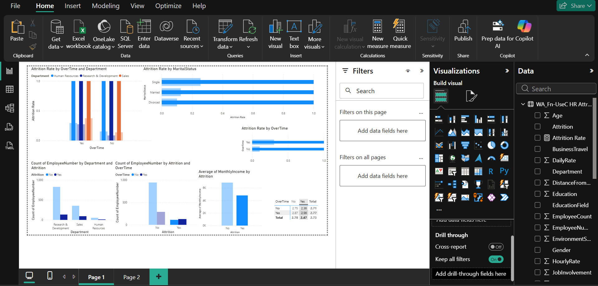
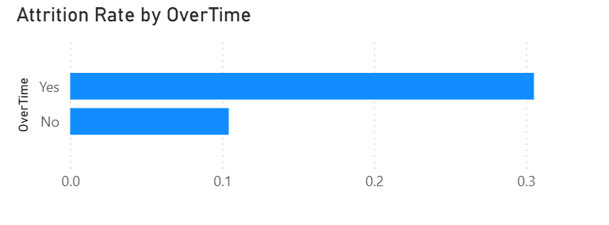
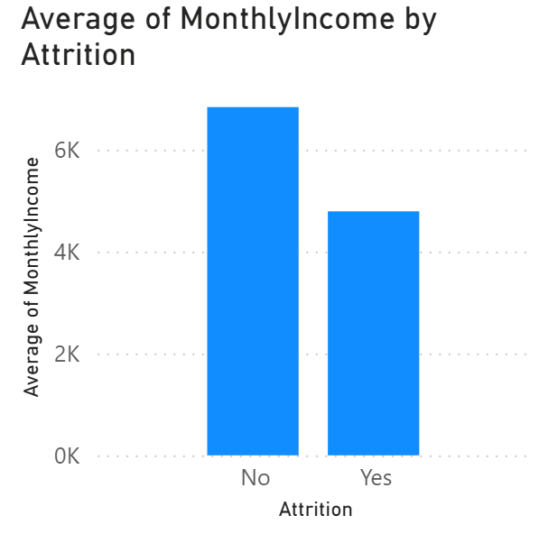
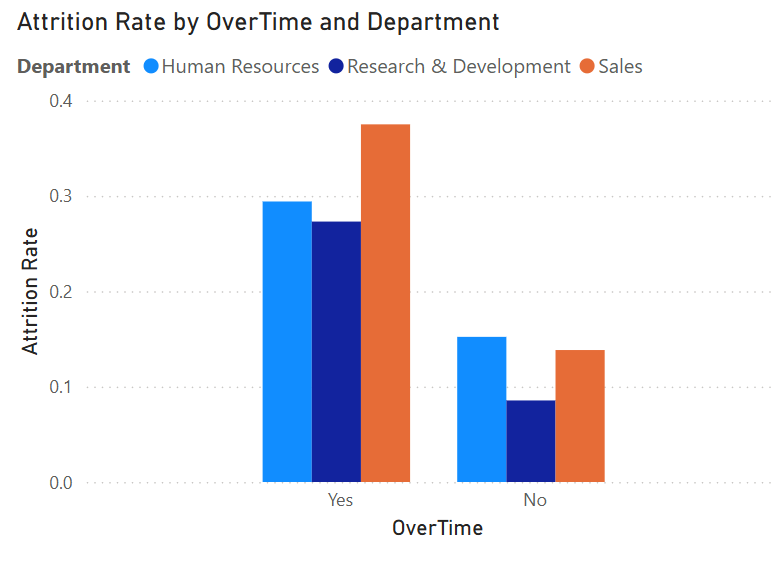

Attrition with Overtime
Likely driven by burnout & workload pressureSalary Gap
Lower pay reduces employee retention thresholdSales Risk
Quota pressure likely causing high turnover
Finding
Employees who work overtime exhibit an attrition rate of 31%, compared to 10% for those who do not.
Business Impact: Overtime shows the strongest observed association with attrition in this dataset, serving as a primary indicator of potential burnout.

Finding
Employees who left had an average monthly income of $4,899, compared to $6,669 for those who stayed (a 26.5% gap).
Business Impact: Lower compensation appears to reduce the threshold for employee tolerance to other workplace stressors.

Finding
Smaller departments suffer proportionally more. HR has a 15% rate, and Sales has a 14% rate, while the larger R&D department has the lowest rate at 9%.
Cross-referencing Overtime with Departments reveals that the danger is not evenly distributed. Sales employees working overtime have a 38% attrition rate (128 out of 446), significantly higher than the company baseline.
Business Impact: The risk is heavily concentrated in the Sales department under overtime conditions, suggesting a structural issue (such as unrealistic sales quotas) rather than a company-wide cultural problem.
The highest risk is observed among employees who combine overtime work with lower income levels, particularly within the Sales department.
Analyze the workload distribution and quota structures for the Sales department to understand why this specific segment requires excessive overtime, directly correlating with the 38% attrition rate.
Implement an incentive-based model specifically for Sales and HR (e.g., increased commission tied to overtime targets) to offset the financial disparity.
Prioritize salary adjustments for employees earning below the $5,000 threshold who are also exposed to overtime, addressing this specific high-vulnerability segment.